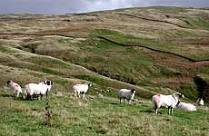
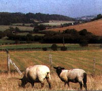
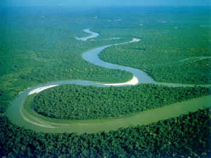
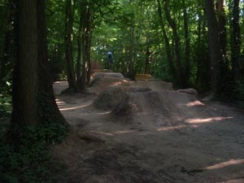

| scruffian | about | zine| media| old news | design projects | links | BMX family | contact |
| England's Forgotten Heritage. Something has been bothering me for the last few months, but those complaints that Joey's Trails are damaging trees has made me want to write something down. Protecting the English Countryside gets a lot of coverage in the media: we must protect our heritage. Only thing is, everyone's forgotten what our heritage actually is.  People are getting really worried about the decline in numbers of sheep grazing on the Yorkshire Moors. Sheep have been grazing on the moors for a long time, but recently this has not become a profitable business so many farmers have stopped doing it. People think that if the hills stop being grazed then we will loose the pasture which makes the area distinctive. The only reason any farmers continue grazing sheep is that they are paid to do it. So public money is paying farmers to look after sheep.It's the same on the North Downs. They're covered with pasture land but as it's not actually financially viable to farm sheep so then lots of money is spent on clearing the scrub which grows naturally to keep the verdant pastures of this old green England. Clearing the scrub does bring in the money though - the farmers are paid to not do anything with it, and just cut back the scrub once every five years.  So, public money is given to wealthy landowners for doing (practically) nothing.What is this obsession with cutting back weeds? Why are the government spending so much money on making sure scrub land doesn't grow up? What would happen if we didn't do it? If an area of ground is left undisturbed for long enough it will return to woodland. This is how England used to look - it was covered with trees. This determination to cut back weeds and scrub land is preventing this natural regeneration of the land into woodland. This is what our heritage really is. One of the main arguments for spending all this money on keeping the sheep pasture on the Yorkshire Moors and the North Downs is to keep the land looking how it did in the past - to preserve our heritage. But this is nonsense. The land has only looked like this since we came along and cut down all the trees to make way for the sheep. The land should really be returned to woodland as it once was. Another argument for keeping the pasture is that it draws in tourists who are attracted by the outstanding natural beauty in the area. The argument says that once the land has become scrub people will not want to visit. This is very short-sighted. Leaving the land to naturally regenerate (which is the cheapest option since is has no cost) will mean that in 20 years a young woodland will be growing, and in 100 years a fully mature woodland for everyone to enjoy. This seems to me to be a much better attraction than the bare hills as they are at the moment. Much better for plants and animals - another part of our natural heritage which is in decline due to the unnatural maintenance of these pasture lands, destroying the woodland. This is very annoying, but it is nothing compared to the hypocrisy surrounding the destruction of the Amazon rainforest. This is another issue which receives a great deal of media attention due to its effect on climate change. I don't know the exact figures but we are always hearing things like "It is estimated that every minute, 80 football pitches of rainforest are destroyed".  The Brazilian government gets a lot of criticism over this. Why are the Brazilians cutting down vast areas of forest? It is for timber and to turn it into farmland. It is for exactly the same reasons that the Ancient forests for England were destroyed.How can we have this attitude towards the destruction happening in the Amazon and be so blind to our own heritage. We have destroyed almost all of our ancient woodland and seem to have no desire to restore it. Why should the Brazilians listen to us? So what am I getting at? How does this relate to Joey's Woods? If we are aware of our heritage, we should be keen to preserve it rather than destroy it. This means we should be trying to reforest as much of England as we can. It should also mean we are more aware of our relationship with the woods and our place within them. For example woodland management through coppicing is one of the few symbiotic relationships that humans can actively enjoy. The woods offer many renewable resources - food, fuel, building materials etc. They can provide us with everything we need to survive.  Ashford is going to have thousands of new homes built over the next few years. I am sure most of these (all?) houses will be built at a high environmental cost, with the destruction of many trees. What makes this worse is that the trees which will be destroyed to make way for the houses won't even be used to build them. They will probably be burnt and we will import cheap timber from the Far East or Brazil. I believe the council are considering using Joey's Wood for an outdoor sporting and leisure complex (the jumps don't count), which will inevitably result in the destruction of most of the trees. So when I see people criticising the trails in Joeys wood and claiming that they are destroying the trees this is just ridiculous. The trails, and the people who look after the woods, are one of the few things that are protecting them.People who spend a lot of time in woods, whether it is riding trails, walking, or anything else, grow to respect the woods and the trees and look after them. I know many people who build trails who have planted more trees around them. The jumps also provide unique habitats for other woodland dwellers like mice, squirrels and rabbits. Jumps actually increase the surface area of the woodland floor which can provide more opportunity for plants to grow. Save the trees and save Joey's trails. |